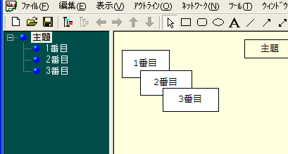
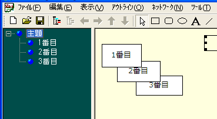

ネットワークビューとアウトラインビューの高度な連携
アウトラインビューによるノードのZオーダー(描画順序)の指定
アウトラインビューでの並び順序のとおりに、ネットワークビューで表示します。つまりZ軸オーダーをアウトラインビューで調整できます。ドローツールの背面移動、前面移動の機能が可視化されたものと考えることができます。
この機能は、メニュー⇒「ツール」⇒「オプション」⇒「ノード」タブで「アウトラインビューの並び順と同期させる」チェックボックスをチェックすることで有効になります

アウトラインビューの並びの昇順と降順を選択可能です。下の図は降順を選択した場合です。

ノードの簡易グループ化機能
iEditには、普通のドローツールにあるような、図形動詞のグルーピング機能がありません。そこで、この機能を実装しました。簡易グループ化機能とは、ネットワークビューでの描画順序が上位の(より背面にある)ノードが、下位の(より前面にある)ノードの領域を含む場合、上位のノードを移動すると下位のノードも追従して移動するという機能です。
この機能は、アウトラインビューとの連動なしでも使用できます。iEditでは、アウトラインビューとZオーダーを同期させるオプションがオフの場合は、ノードが作成された順番で描画します。ただ、グループ機能でZオーダーを制御したい場合は、アウトラインビューと同期させた方がはるかにわかりやすく、操作も簡単になります。
動画によるデモ
ノードのグループ化機能とアウトラインビューの連携
簡易グループ化機能と、指定ノード配下を全て表示する機能が、両方オンになっているときに、ネットワークビューで、ノードグループを変更すると、アウトラインビューにも反映されます。ネットワークビューでの入れ子関係がアウトラインビューでの親子関係と完全に同期するので、図形的に整理していくだけでアウトラインが自動生成されると考えてよいでしょう。
この機能はデフォルトでは有効になっていません。ツールバー(図の一番右のボタン)か、ネットワークビューのコンテキストメニューの「簡易グループ化機能とアウトラインを連動する」にチェックを入れることで有効になります。
言葉での説明は難しいので、スクリーンキャプチャソフトで動画を作りました。